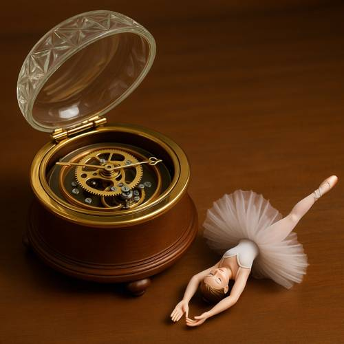
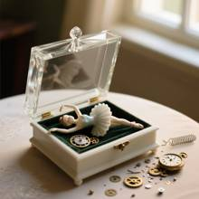
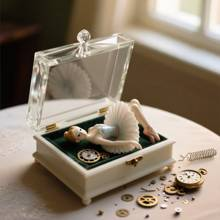

Relationship — A beautiful glass music box was opened, but because the clockwork had
A beautiful glass music box was opened, but because the clockwork had broken, the ballet dancer inside also fell sideways.

Direct — one call, no iterationContinuum — Qwen3.8-27B + Qwen-Image
Judge — Direct
FAILRelationship - Inclusion — The image shows a music box and a ballet dancer figurine. However, the ballet dancer is positioned outside the music box, lying on the wooden surface next to it, not inside it.
FAILLogical Reasoning — The image shows a ballet dancer figurine lying on its side. However, the figurine is completely separate from the music box and its mechanism. Therefore, the image does not visually represent the causal relationship that the dancer fell because the clockwork broke, as it is not attached to the mechanism in the first place.
Judge — Continuum
PASSRelationship - Inclusion — The image shows an open music box with a clear glass lid. A figurine of a ballet dancer is located within the confines of the box, lying on its green felt-lined interior.
PASSLogical Reasoning — The image depicts a ballet dancer figurine lying on its side inside the music box. Additionally, there are numerous loose gears and a spring scattered on the table around the music box and a few inside it, visually representing the broken clockwork. The dancer's fallen position is consistent with the state of the broken mechanism.
What the agent did
Thinking
The user is describing the following scene: "A beautiful glass music box was opened, but since the clockwork mechanism had broken, the ballerina inside also toppled to the side." So I need to generate an image of an opened glass music box with a broken clockwork mechanism, and a ballerina figurine lying on its side inside. Let me build a detailed visual prompt: "A beautiful glass music box, opened lid, inside a small ballet dancer figurine toppled on its side, broken clockwork mechanism, gears and springs visible, delicate porcelain dancer figurine lying sideways inside the box, elegant and sad mood, soft lighting, still-life photography." First, let me generate with qwen-image, then check, then edit as needed, and mark the best. Let me carefully write the generation prompt — filling in visual details: "Beautifully opened glass music box, transparent crystal glass case, lid propped open, inside a small porcelain ballet dancer figurine toppled to the side, lying on her back on the velvet-lined base, her arms askew, next to the figurine scattered and bent broken clockwork mechanism, tarnished brass gears, tiny springs, delicate still life, soft window light, shallow depth of field, elegant and melancholic atmosphere, photorealistic" Let me generate this.
Step 1 — `generate_image`
{
"model": "qwen-image",
"prompt": "A beautiful glass music box with its transparent crystal lid open, sitting on a table in soft warm light. Inside the box, on a velvet-lined base, a delicate porcelain ballet dancer figurine has fallen over sideways, lying on her side with her arms and tutu askew, no longer dancing. Beside the fallen dancer, a small broken clockwork mechanism with tarnished brass gears, a snapped spring, and scattered tiny parts lies spilled across the base. Melancholic, elegant still-life photography, shallow depth of field, fine detail, gentle window light."
}
Result img_0

Thinking
Let me inspect the result. The image shows a glass music box opened on a table. Inside, the ballerina figurine is lying down—though she's lying on her back, not on her side. The prompt says "the ballerina inside is also toppled over." Wait, there's something odd: on the inside of the glass lid there's what looks like a reflection or a second dancer? Looking more carefully—there's a ghostly dancer image visible through the glass lid. Actually that might be a reflection of the dancer inside, or a second figure. Hmm, it looks like a faint ballerina silhouette is visible in the upper area of the glass lid. That's probably a reflection of the figurine. No problem. Issues to check: 1. The dancer is lying on her back, not "toppled over." In the image she's lying on her back with her arms spread—she looks like she's fallen, but the prompt says "toppled over." Close enough? The description says "toppled over." On her back with her arms flailing looks like she's toppled. But "toppled over" specifically means lying on one's side. Let me inspect the details. 2. The broken clockwork: there are gears inside the box near the dancer, and scattered parts on the table outside. There's also a pocket watch—this is an addition not in the prompt, but it does emphasize the broken mechanism. The prompt didn't mention a pocket watch, but it's thematically consistent with "the clockwork broke." Hmm, the pocket watch isn't part of the music box. It's an extra element. Should I remove it? The prompt says "because the clockwork broke, the ballerina inside is also toppled." The scattered gears and spring on the table convey the broken mechanism. The pocket watch is an extra object. It might be fine, but strictly speaking it wasn't requested. 3. The lid: the glass lid is open. Good. There's a ghostly dancer in the lid—could be a reflection, or a faint painting/engraving. Let me zoom in and check. Let me use inspect_region to look at the lid and the dancer. Actually, overall this is pretty good. Main checks: - Is the dancer "toppled over"? She's lying on her back. Ideally I should adjust her to be on her side. That's a pose change, which is a structural change—a hard edit. It might work with edit_image: "the dancer figurine is lying on her side." Let me first zoom in and inspect. Let me try inspecting a few regions: the lid (the ghostly dancer), and the dancer.
Model
The first result looks close. Let me inspect the details — the dancer's pose and that faint figure on the glass lid.
The lid is just a simple glass lid — the "ghostly dancer" visible on the full image is a reflection of the figurine through the glass, which is realistic and not a problem. The dancer is lying on her back with arms spread out, and looks more like she's fallen than lying on her side. The prompt says "fell sideways." The current pose is fallen on her back, but this can be interpreted as having fallen too. However, "sideways" specifically means on one's side. In the image, the torso is slightly tilted... actually, she's lying on her back with her head to the left and legs to the right. It's a fallen state, but it could be improved to be on her side. Also about the mechanism: in the full image, there are gears inside the box near her feet, and a pocket watch plus scattered gears and springs on the table. The pocket watch is an element that wasn't requested. Hmm. The prompt is "because the clockwork mechanism broke, the ballerina inside also fell." The scattered gears + springs on the table and gears inside the box convey that. The pocket watch is extra. It's a minor inconsistency, but since it's a clockwork-themed scene, it might look intentional. That said, strictly speaking, the pocket watch isn't part of the music box. I could edit it out, but there's a risk of degrading the image. I think it's acceptable — the scene remains coherent. No wait, let me reconsider: the prompt is a single sentence, and the key elements are: 1. A beautiful glass music box ✓ (glass lid, white/ivory base) 2. Opened ✓ 3. Broken clockwork ✓ (gears scattered inside and out, broken springs) 4. The ballerina inside has fallen sideways — she's fallen, on her back. The only weak point: "fell sideways" vs. lying on her back. Let me try an edit to rotate her to be on her side. That's a structural pose change, so edit_image might be able to handle it: "the ballerina figurine is lying on her side instead of her back, on her left side, with her tutu slightly crumpled." Let me give it a try. If it fails or looks bad, I'll keep the current version. No wait, hold on — is lying on her back acceptable as "fell sideways"? Not really. "Fell sideways" clearly means she's on her side. A single targeted edit is worth it. Let me mark img_0 as the best for now (since it's a good candidate), and then try the edit.
Model
The glass lid is clean — the faint dancer is just a reflection, which is realistic. The main flaw: the prompt says the dancer "fell sideways," but she's lying flat on her back. Let me mark this as a backup and try a targeted edit to get her onto her side.
Step 4 — `mark_best`
{
"image": "img_0",
"reason": "All key elements present: open glass music box, fallen dancer, broken clockwork with scattered gears. Only flaw is dancer on her back instead of her side."
}
Thinking
The faint figure on the glass lid is nothing more than a reflection of the dancer, and it's realistic. The dancer is lying on her back, but the prompt says "fell sideways." Let me try to correct the pose to have her on her side. Actually, looking at the close-up, the dancer is lying with her arms spread out, somewhat on her side... let me look more carefully. Her torso is slightly twisted, but her back is facing upward. The prompt says "the ballerina inside also fell sideways"—meaning she should be on her side. The current pose shows her fallen, but on her back. Let me try editing it so she's clearly on her side. That's a localized change. I'll try edit_image with a concrete instruction.
Model
The faint shape on the lid is just the reflection of the dancer — realistic. However, the dancer is lying on her back, but the prompt says she "toppled to the side." Let me try to fix her pose to be clearly on her side.
Step 5 — `edit_image`
{
"image": "img_0",
"model": "qwen-image",
"prompt": "Repose the fallen ballet dancer figurine so she is lying on her side: her head and shoulder resting on the green velvet, her body turned 90 degrees onto her side, the white tutu draped over the velvet, one arm fallen forward on the box floor. Keep everything else identical: the open glass lid, the broken clockwork gears and pocket watch, the table and lighting."
}
Result img_3
Thinking
In the edited image, the dancer is still lying on her back (though the direction has flipped, with the head on the right and feet on the left). The edit changed the orientation of the dancer but didn't rotate her onto her side. To confirm, let me inspect the close-up.
Model
The pose changed but she still appears to be on her back. Let me zoom in to verify.
In the cropped image, the dancer is still lying on her back — her torso is horizontal, her face is pointing up, and her arms are spread out. In the prompt, "toppled over sideways" means she should be on her side. Options: 1. Try edit_image again, specifying a different seed or phrasing, to rotate her onto her side. 2. Accept that she is fallen (which conveys the meaning) — but the prompt clearly says "sideways." Let me try once more with clearer phrasing: "The dancer figurine is lying on her side, with her right shoulder and cheek touching the velvet, her face pointing toward the viewer at an angle, and her back slightly arched." In fact, in the reference crop, her face is pointing up. To put her on her side, her cheek needs to be touching the velvet. I'll try a different seed with more specific instructions. If it fails again, I'll accept the fallen version — being fallen conveys the essence, and "sideways" is a nuance. However, per the policy: I'll try a different seed for the same approach up to 2–3 times.
Model
Still on her back. Let me try the same edit again with different phrasing and a fresh seed.
Step 7 — `edit_image`
{
"image": "best",
"model": "qwen-image",
"prompt": "Turn the fallen ballet dancer figurine onto her side so her cheek and shoulder rest on the green velvet, her face tilted toward the camera, her back slightly arched, one leg bent on top of the other, the white tutu splayed beside her. She must be lying on her side, not flat on her back. Keep the box, lid, gears and lighting exactly as they are."
}
Result img_5

Thinking
Currently, the dancer is lying on her side — her cheek is against the velvet, her legs are bent, and one leg is raised. Let me check the details: zoom in on the dancer to verify the quality, and also check the glass lid — in this version, the reflection is showing the tutu, which is fine. Let me examine the dancer region in img_5.
Model
Now she's clearly on her side, cheek to velvet, leg bent. Let me verify the details up close.
The close-up shows a dancer figurine lying on her side, with her cheek resting on the velvet, her arms placed in front of her body, her legs bent, and her tutu (petit) spread out. It looks natural and beautifully rendered — the figurine has a good quality, the face is well done, and the tutu has good pleats too. Checking all the elements in img_5: 1. Beautiful glass music box ✓ — glass lid, white/ivory base, gold hinges, small feet 2. Opened ✓ 3. Broken clockwork ✓ — gears inside the box near the dancer, broken springs on the table, scattered small gears and parts, pocket watch 4. The ballerina inside has toppled over ✓ — now clearly on her side The reflection of the tutu in the glass lid is also fine (it's a reflection of the dancer's tutu). This is a good result. I'll mark img_5 as the best and finish.
Model
The dancer is now clearly fallen onto her side — cheek against the velvet, arms limp, legs bent, tutu splayed out. The rendering quality is fine too: delicate facial features, pleated tutu, and the glass lid, the broken gears, the snapped springs, and the scattered clockwork parts are all in place. All the elements of the prompt are present and correct.
Step 9 — `mark_best`
{
"image": "img_5",
"reason": "All prompt elements satisfied: open glass music box, broken clockwork (gears, snapped spring, scattered parts), and the ballet dancer figurine fallen sideways on the velvet base. Pose and quality are good."
}
Thinking
Done. The image that was marked, img_5, is the final version. Let me summarize concisely.
Model
The final image is ready — marked as `img_5`. **What it shows:** - **Open glass music box** — a crystal lid propped open on a white, gilt-trimmed case with a deep green velvet interior - **Fallen ballet dancer** — the porcelain figurine has toppled onto her side, cheek against the velvet, arms slack, one leg bent, her white tutu splayed where she fell - **Broken clockwork** — tarnished brass gears lying inside the box beside her, a snapped coiled spring, and a scatter of tiny broken parts (plus a small pocket watch) on the table — the mechanism that used to turn her, now dead The composition reads the whole story in one frame: a delicate, once-living little dance, interrupted mid-motion. Soft window light and shallow depth of field give it a quiet, melancholic still-life feel.